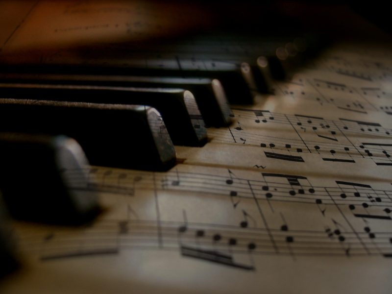

История музыки
Древние времена
Музыка существует с незапамятных времен. Древние культуры, такие как египтяне, шумеры и китайцы, создавали музыкальные инструменты и развивали свои музыкальные традиции. Первые музыкальные инструменты, такие как барабаны и флейты, использовались для религиозных и ритуальных целей.
Средние века
Средневековая музыка (500–1400 годы) в основном была религиозной. Григорианские песнопения стали основой церковной музыки. В этот период появились первые формы нотной записи, что позволило композиторам записывать и сохранять свои произведения.
Эпоха Возрождения
В эпоху Возрождения (1400–1600 годы) музыка стала более светской. Композиторы, такие как Джованни Пьерлуиджи да Палестрина и Орландо ди Лассо, создавали сложные полифонические произведения. Музыка стала важной частью придворной жизни и получила большое развитие в Европе.
Барокко
Эпоха барокко (1600–1750 годы) характеризуется сложной и насыщенной музыкой. Композиторы, такие как Иоганн Себастьян Бах, Георг Фридрих Гендель и Антонио Вивальди, создавали произведения с богатой гармонией и выразительной мелодией. В этот период появился жанр оперы.
Классическая эпоха
Классическая эпоха (1750–1820 годы) принесла ясность и простоту в музыку. Композиторы, такие как Вольфганг Амадей Моцарт, Людвиг ван Бетховен и Йозеф Гайдн, создавали симфонии, сонаты и концерты, которые стали основой классического репертуара.
Романтизм
Эпоха романтизма (1820–1900 годы) характеризуется эмоциональной выразительностью и индивидуализмом. Композиторы, такие как Фридерик Шопен, Франц Шуберт и Рихард Вагнер, исследовали новые музыкальные формы и выразительные возможности.
Современная музыка
XX и XXI века принесли новые жанры и стили. Джаз, рок, поп и электронная музыка стали доминирующими жанрами. Технологический прогресс позволил создавать новые звуки и экспериментировать с музыкальными формами. Современные композиторы и исполнители продолжают развивать музыку, создавая новые направления и стили.